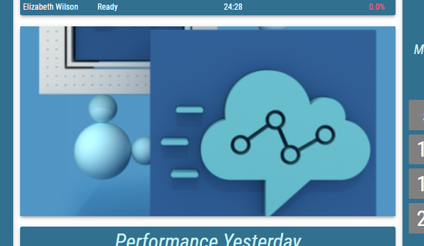
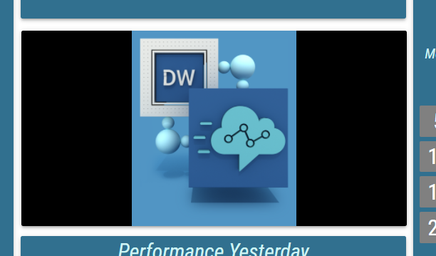
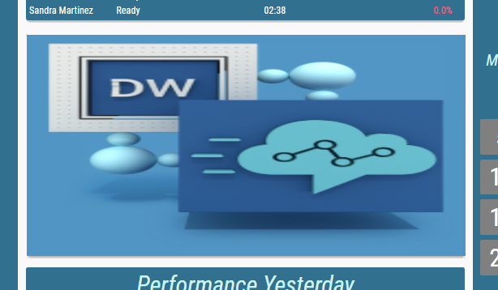

Conditional Styles¶
First conditional style whose condition has been met is applied.
- Mode
For information about setting the condition, see Condition section.
A condition that needs to be met for the conditional style to apply. For more information,
- Description
A short definition of the usage of the conditional style.
- Appearance
A style of the condition.
- Presentation Type
Defines how value should be presented.
Available options are:- Alphanumeric
The value is presented as a pure text, without any additional graphical elements.
- Semaphore
The value is enveloped in a colored circle. The circle changes color based on configured conditional styles. The semaphore is used, when the state is more important than the value itself.
- Circle
The value is accompanied by a circle indicator. The indicator represents the level of fulfillment of a configured goal.
- Semi Circle
The value is accompanied by a semi-circle indicator. The indicator represents the level of fulfillment of a configured goal.
- Horizontal/Vertical Bar
The value is accompanied by a rectangular indicator. The indicator represents the level of fulfillment of a configured goal.
- Image
An image is applied, when the condition is met.
- Static Color
A static color is applied, when the condition is met.
- Display Format
Format in which the value should be displayed. When Raw is selected, the value is displayed without any transformation.
- Custom Display Format
Available only when “Custom” is selected as a Display Format
For more information see Custom Display Format section.
Custom format in which the value should be displayed.
- Text/Semaphore/Circle/Semi Circle/Bar Color
According to the selected presentation type
For more information see Color Field section.
Color of the text.
- Background Color
Not available, if the “Image” presentation type is selected
For more information see Color Field section.
Color of the background.
- Alternate Text/Semaphore/Circle/Semi Circle/Bar Color
According to the selected presentation type
For more information see Color Field section.
Alternating color of the text.
- Alternate Background Color
Not available, if the “Image” presentation type is selected
For more information see Color Field section.
Alternating color of the background.
- Text Style
Not available, if the “Image” presentation type is selected
For more information see Text Style section.
Type of font to use and whether bold or italic text should be used.
- Text Sizing
Not available, if the “Image” or “Static color” presentation type is selected
Controls, how font size is calculated.
Available options are:- Regular
Font is sized relatively to grid column’s height.
- Best Fit
Font is dynamically sized to always fit inside column.
- Font Size Coefficient
Available only if “Regular” is selected as a text sizing
Not available if “Image” or “Solid Color” is selected as a presentation type
The font size is calculated by multiplying available height for the text by font size coefficient. In the case of semicircle, circle and semaphore presentation type combined with the regular sizing, available height is defined by the height of the circle/semicircle/semaphore. Otherwise, by the height of the container.
- Choose Display Range Min Manually
Available only when “Circle”, “Semi Circle” or “Bar” presentation type is selected.
Whether the minimum on the value range is defined manually.- Min
Value, that defines the minimum on the value range.
- Choose Display Range Max Manually
Available only when “Circle”, “Semi Circle” or “Bar” presentation type is selected.
Whether the maximum on the value range is defined manually.- Max
Value, that defines the maximum on the value range.
- File
Available only if the “Image” presentation type is selected
For more information see Static content chapter.
Relative path of the image, that should be displayed. Using the {{value}} placeholder in the path, an image can dynamically change, based on the Grid value.
- Image Horizontal Alignment
Available only if the “Image” presentation type is selected
Controls, where the image should be aligned on the horizontal axis.
Available options are Left, Center and Right
- Image Vertical Alignment
Available only if the “Image” presentation type is selected
Controls, where the image should be aligned on the vertical axis.
Available options are Top, Middle and Bottom
- Image Size
Available only if the “Image” presentation type is selected
Decides, how the image is adjusted to the Segment’s size.- Cover
The image is resized to cover the whole Segment, without deforming the image. No uncovered spaces are present. However one of image’s axis may overlap outside of the Segment’s boundaries.
Figure 1: Cover

- Contain
The image The image is resized to be fully displayed, in largest possible size, without deforming the image. Uncovered spaces, filled with the Background Color, are present.
Figure 2: Contain

- Fill
The image fully fills the entire Segment’s size. The image may be deformed. No uncovered spaces or overlapping occurs.
Figure 3: Fill

- Custom
When selected, Custom Size Height and Custom Size Width fields are displayed. These fields define size of the image in percentages of the Segment’s size.
Figure 4: Custom

- Effects and Filters
Available only if the “Image” presentation type is selected
Controls, adjusting the image, such as Brightness, Contrast, Opacity etc. Click to revert image to its default values.
- Blink Background
Whether a background should blink, when the condition is met.
- Color
Inheritable
For more information see Color Field section.
Color of the blinking background.
- Play Audible Alert
Whether audio sound should be played, when the condition is met.
- Audio File
Inheritable
For more information see Static content chapter.
The alert sound that will be played.
- Repetition
Inheritable
Defines how many times audio alert should be played.- Repeat
The sound is continuously repeated while the bad value is present.
- Don’t Repeat
The sound is played only once, when the bad value is first displayed.